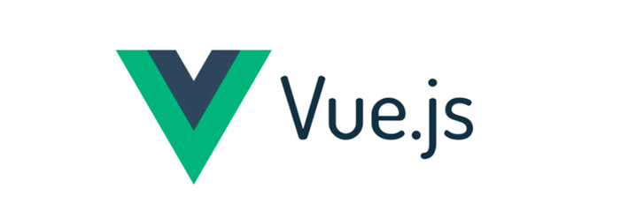

Herramientas
-Babel WebPack Prototype Polyfill:
Babel es un transcodificador ampliamente utilizado que puede convertir el código ES6 en código ES5, que se puede ejecutar en el entorno existente, por lo que podemos escribir en ES6 sin considerar el tema del soporte ambiental.
-PHP Frameworks:
Un framework PHP es una plataforma para crear aplicaciones web PHP. Los frameworks de PHP proporcionan bibliotecas de código para funciones de uso común, reduciendo la cantidad de código original que necesitas escribir.

-JSP:
JavaServer Pages es una tecnología que ayuda a los desarrolladores de software a crear páginas web dinámicas basadas en HTML y XML, entre otros tipos de documentos. JSP es similar a PHP, pero usa el lenguaje de programación Java.

-CSS:
Es un lenguaje de diseño gráfico para definir y crear la presentación de un documento estructurado escrito en un lenguaje de marcado.

-Bootstrap:
Bootstrap es una biblioteca multiplataforma o conjunto de herramientas de código abierto para diseño de sitios y aplicaciones web.

-Vue:
Es un framework de JavaScript de código abierto para la construcción de interfaces de usuario y aplicaciones de una sola página.

-Django:
Es un framework de desarrollo web de código abierto, escrito en Python, que respeta el patrón de diseño conocido como modelo–vista–controlador.
-React:
Es una biblioteca Javascript de código abierto diseñada para crear interfaces de usuario con el objetivo de facilitar el desarrollo de aplicaciones en una sola página. Es mantenido por Facebook y la comunidad de software libre. En el proyecto hay más de mil desarrolladores libres.

-Angular:
Es un framework para aplicaciones web desarrollado en TypeScript, de código abierto, mantenido por Google, que se utiliza para crear y mantener aplicaciones web de una sola página.

-JavaScript:
Es un lenguaje de programación interpretado, dialecto del estándar ECMAScript. Se define como orientado a objetos, basado en prototipos, imperativo, débilmente tipado y dinámico.

-TypeScript:
Es un lenguaje de programación libre y de código abierto desarrollado y mantenido por Microsoft. Es un superconjunto de JavaScript, que esencialmente añade tipos estáticos y objetos basados en clases.

-JQuery:
Es una biblioteca multiplataforma de JavaScript, permite simplificar la manera de interractuar con los documentos HTML.

-Gatsby:
Es un framework para aplicaciones web desarrollo sirve para preconfigurar la construccion de tu sitio web.
-Hugo:
Es un framework para creacion de sitios web de proposito general. Se ubica en la categoria de los nuevos generadores de sitios web estaticos.
-Jekyll:
Es un generador simple para sitios web estáticos con capacidades de blog; adecuado para sitios web personales, de proyecto o de organizaciones.

-Pelican:
Es un generador de sitios web estaticos parecido a hugo el cual tambien hace el uso del lenguaje Markdown.
-Scraping:
Es una tecnica utilizada mediante programas de software para extraer informacion de sitios web. Estos programas simulan la navegacion del ser humano.
-Heroku:
Es una plataforma como servicio de computacion en la nube que soporta distintos lenguajes de programcion. Este es propiedad de Salesforce.

-VuePress:
Es otro generador de sitios estaticos tambien muy parecido a hugo y los demas dichos con anterioridad.

C++
Es un lenguaje de programación que proviene de la extensión del lenguaje C para que pudiese manipular objetos.

Phyton
Es un lenguaje de programación interpretado cuya filosofía hace hincapié en la legibilidad de su código.